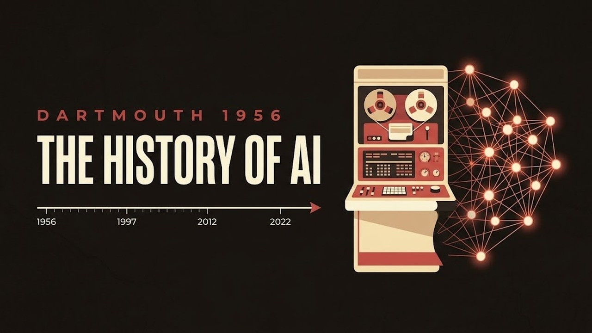
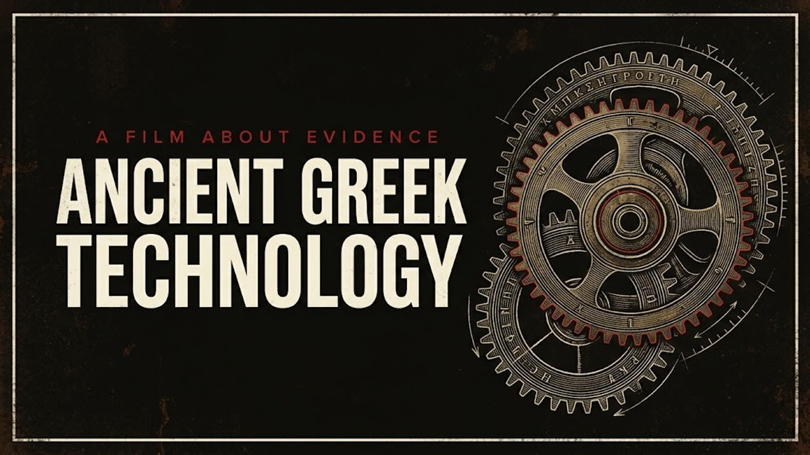
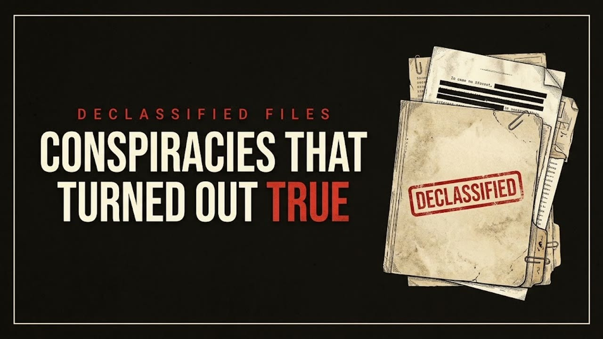
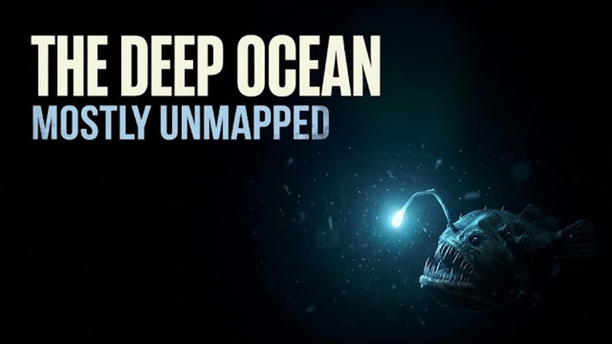

How I make AI documentaries for Past Forward
The channel
Past Forward is my YouTube channel for short, fact-checked documentaries about the machinery of history. Four films are published: the history of AI, ancient Greek technology, conspiracies that turned out to be true, and the deep ocean. The films are made with AI tools, and every film says so in its description.
This post is the practical version: the tools, the workflow, what it costs, and how to build the same setup with your own accounts.




The tools
- Research and scripting: done with my AI assistant, claim by claim from named primary sources.
- Narration: Chatterbox, an open-source text-to-speech model (MIT license), running on Kaggle's free GPU quota. https://github.com/resemble-ai/chatterbox
- Scene images and thumbnails: still images generated with my paid Google AI Plus subscription. https://one.google.com/about/google-ai-plans/
- Assembly: Remotion, video as code in React, free for individuals, rendered with open-source ffmpeg. https://www.remotion.dev/ · https://ffmpeg.org/
- Narration checking: two independent transcription systems, Google's Gemini in AI Studio and OpenAI's Whisper run locally as faster-whisper. https://github.com/SYSTRAN/faster-whisper
- Music: Treblo AI for the Greek and conspiracy films. https://treblo.com/
- Archival material: historical photographs and documents, each one license-checked before use.
The workflow
- Topic and sources. The script is written with my AI assistant, claim by claim from named primary sources: official records, declassified documents, peer-reviewed journals, expedition pages, depending on the film. A written fact-check document maps every spoken claim to its source, and numbers are re-verified against current sources at production time.
- Narration. The script is split into 18 to 24 chunks. Each chunk is generated separately with Chatterbox on a free Kaggle GPU, and every audio file's duration is measured with ffprobe.
- Scenes. Still images only. The Greek film mixes AI-generated scenes with credited archival photographs, like the Antikythera fragment photos. The conspiracy film uses declassified documents and archival photos. The deep-ocean film uses AI-generated stills only. Motion comes from Ken Burns pans and zooms on the stills plus code-driven cards, not from AI video clips.
- Assembly in code. One build script takes the measured audio durations and computes every frame timing from them: the audio concat and the Remotion timeline are generated from the same numbers, which keeps picture and sound in step and reduces sync drift. ffmpeg renders the final file, and the export is still checked before upload. The Greek and conspiracy films are built exactly this way.
- Quality checks. Described below.
- Publish. Upload, thumbnail, and a description that carries the AI disclosure.
The checks, as they run today
These checks grew over the first films, so this describes the current workflow, not what every published film went through.
Narration accuracy. In the current setup, Whisper transcribes every chunk and Gemini transcribes the full narration track as an independent second check against the script. In the Greek film the Gemini pass ran where quota allowed; in the newest film the full track was checked this way. Where a transcription disagrees with the script, the line gets another look; real defects are fixed with a phonetic respelling and a re-generation of that chunk. In the Greek film this caught five real defects, including "127 mirrors" read as "107".
Sound. The final mix is measured with ffmpeg's loudnorm (integrated LUFS, true peak, loudness range), and RMS levels are compared between narration and music-only windows to check that the music ducking works. The same loudness settings are used across films so the channel sounds consistent.
Picture. Frames are sampled from the final render for a luminance check and a visual inspection, and the finished file goes through a whole-film review in Gemini that covers picture and sound together. After upload, the uploaded audio is compared against the master.
Rights and licenses
Archival material is used only with a clear license: CC BY, CC0 or public domain, each asset checked before use, and the credit goes in the film's own end credits. The Greek film's Antikythera fragment photo is credited as "photo: Logg Tandy, CC BY 4.0". Generated material is covered by the terms of the tools that made it: the music is generated with Treblo AI, whose terms (https://treblo.com/tos, section 8) say you own the music you generate and may use it commercially, that outputs may not be unique, and that Treblo keeps a license to use outputs. Check the current terms yourself before relying on them.
What it costs
Not zero. Kaggle's GPU time is free within a weekly quota (currently 30 hours, sometimes higher depending on demand: https://www.kaggle.com/docs/efficient-gpu-usage). Chatterbox, Whisper and ffmpeg are open source, and Remotion is free for individuals. Scene and thumbnail images run on my existing paid Google AI Plus subscription. There is no other channel spend.
Build it yourself
The setup is reproducible with your own accounts: a free Kaggle account for GPU time, Chatterbox from its GitHub repo, a Google AI plan for image generation, a Remotion project for assembly, ffmpeg for rendering, and two transcription services for the narration check. The part that takes real work is not the tools. It is the source map, the fact-check document and the per-asset license checks.
The films are at https://www.youtube.com/@PastForwardDocs.
Back to the blog